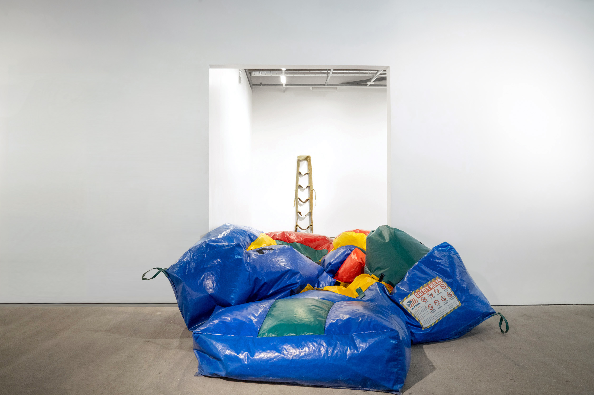
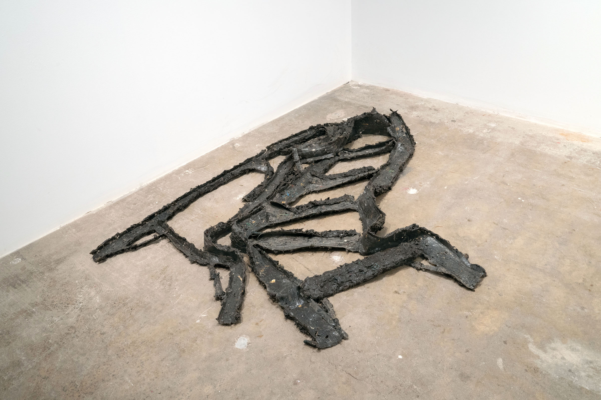
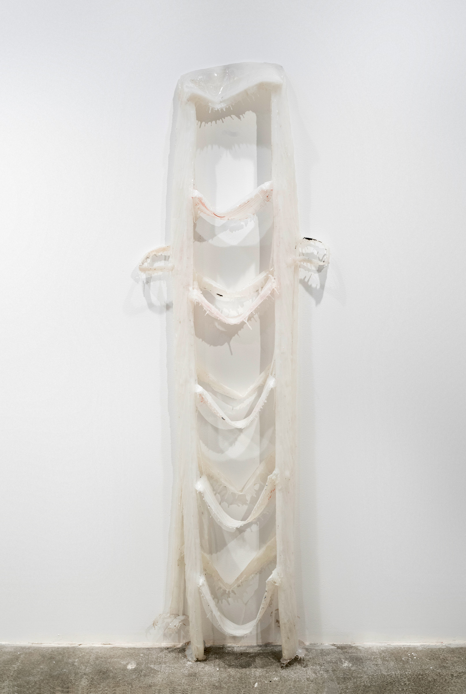
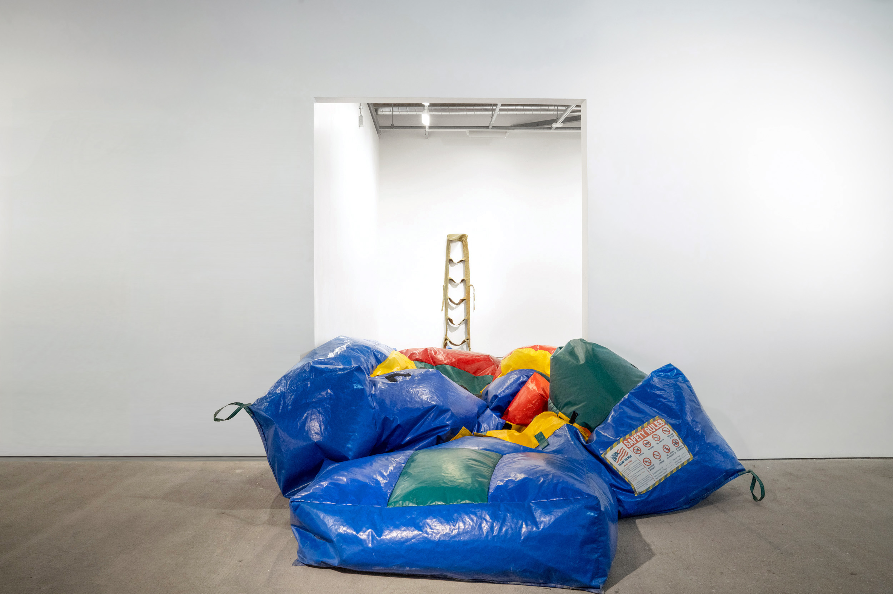
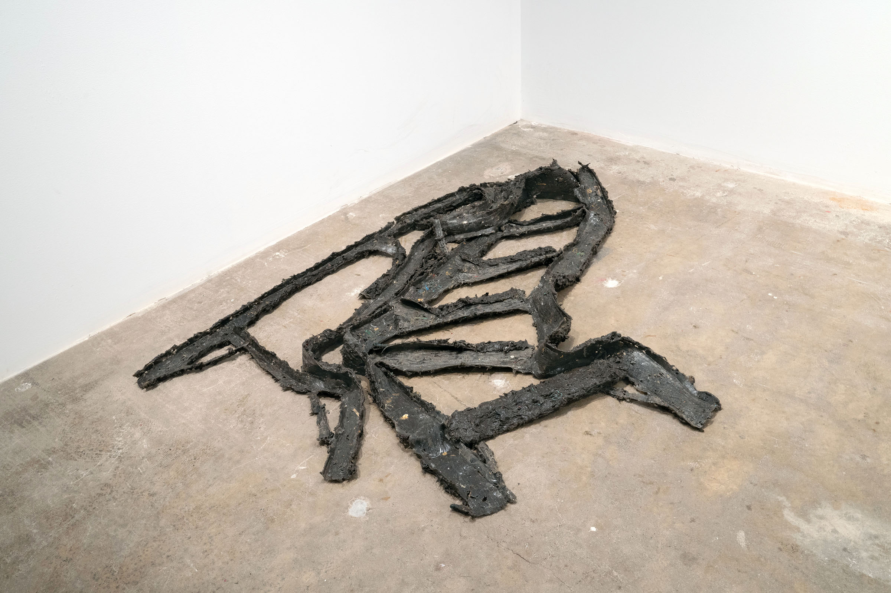
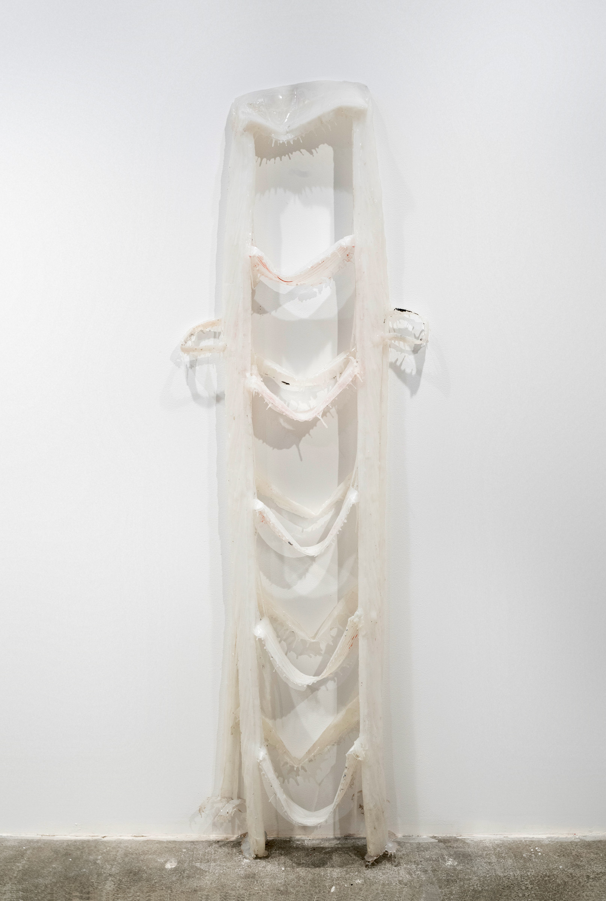

Welcome! And Other Fallacies
Dakota Higgins, Omar Gomez & Gabriela Saucedo
Feb 2023
Margo Leavin Studios
Culver City, CA
A malleable paradise plastic and portable, the inflatable fortress stands for fun—or so it once stood. Up, down, in, out—the vinyl lung breaths to half-mast; a wheeze in flying colors. With each exhale, the viewer is left with an empty invitation as the demi-monument reveals some hidden flaccid forms: rubber ladders a-flop and a-dangle from their tops; ladders limp as if from overuse. THIS IS NOT A STEP. When the jumper bounces back, filling and spilling into and out of its confines, the ladders are obscured and the viewer’s path is again obstructed.
Placeholder is pleased to present Welcome! and Other Fallacies, a three-person show by Dakota Higgins, Omar Gomez and Gabriela Saucedo. Using materials whose physical presences and properties parallel one another, the two create an environment in which inanimate objects, a bounce house—known colloquially as a “jumper” in Latinx communities—and a suite of latex ladders, perform with and for the viewer. Every 20 minutes, Saucedo and Gomez’s Jumper fills with just enough air to prevent visitors from entering the gallery and seeing the works therein. Once the power kicks off, the work slowly deflates back into a pile of plastic to reveal Dakota Higgins’ Impressions—rubber replicas of ladders used by artists in their studios.
The show’s choreography is both an invitation and a trap. Just as each Latinx family function culminates with the trickster’s deflation of the jumper, trapping the children within, it is these works’ ultimate inability (or unwillingness) to stand on their own that activates them. As soft structures for ascension, both Jumper and Impressions make use of the joke’s power to elevate, debase and conflate all at once. The works teeter between the bathetic and the pathetic.
When “the outside world” and “the art world” (an already mythical binary) are put in tension and dialogue, distances between site, material, history, and the social break down. In Welcome!, and Other Fallacies, the artists propose an exhibition that may be read as a metonym or microcosm for the dynamics of the gallery: if within the white cube equality and access are always already collapsed, can such uneven ground become a new and fruitful point of departure?
 




